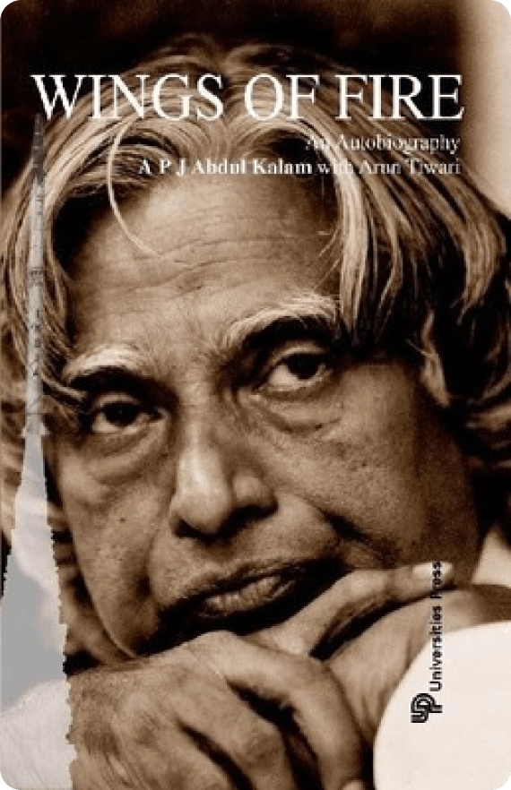

Wings of Firer
by Arun Tiwari
Every common man who by his sheer grit and hard work achieves success should share his story with the rest for they may find inspiration and strength to go on, in his story. The 'Wings of Fire' is one such autobiography by visionary scientist Dr. APJ Abdul Kalam, who from very humble beginnings rose to be the President of India. The book is full of insights, personal moments and life experiences of Dr. Kalam. It gives us an understanding on his journey of success.